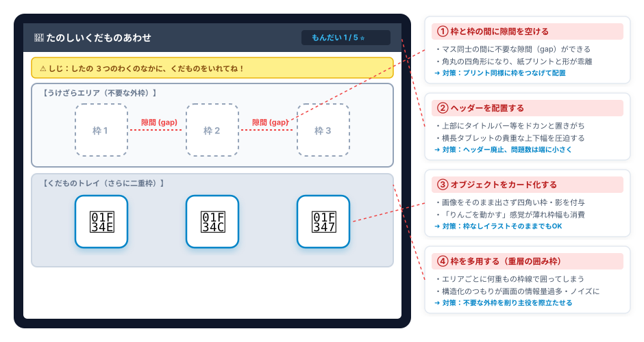

🎨
深淵ダーク
⛶
全画面
THEORY & PRACTICE
特別支援教育
アプリ開発ハンドブック
認知特性・UI設計・現場運用の体系化
INTRODUCTION
導入
「今日の研修を
アプリで表すとこれ
」
お手元の端末で操作
Intro
全体の流れ（全5章）
本日の
全体構造
仮説・設計論（全5章）
01
第1章：生成AIで何ができる？
→
02
第2章：学習アプリの5大メリット
→
03
第3章：アプリでの学習と強化学習
→
04
第4章：学習用アプリの設計・実装思想
→
05
第5章：Geminiを活用したアプリ作り
→
CHAPTER 01
生成AIで何ができる？
アプリ開発の視野を広げる
「4つの領域」
CHAPTER 01
1.1 アプリ開発の視野を広げる「4つの領域」
領域 1
学習用アプリ
個別学習・概念獲得
領域 2
授業支援アプリ
視覚支援・集団共有
領域 3
プリント課題作成アプリ
教材自動生成・印刷
領域 4
業務効率化アプリ
指導計画作成・校務遂行
CHAPTER 01
領域 1：学習用アプリ
児童生徒の直接操作
概念獲得・反復学習
個別学習・概念獲得
直感的なドラッグ操作
ブレのない即時フィードバック
具体物の方が適切？
CHAPTER 01
学習用アプリの題材例
一つずつ配ろう
１対１対応
アプリを開く ↗
大きい・小さい
大小弁別
アプリを開く ↗
数えよう基礎
数概念導入
アプリを開く ↗
平仮名キーボード
文字入力・表出
アプリを開く ↗
カルタ
絵と音声の弁別
アプリを開く ↗
実態に合わせた自作
目の前の子に特化
共有も容易
CHAPTER 01
領域 2：授業支援アプリ
教室前方モニターでの
視覚支援・集団共有
スケジュール時計
予定と時間の視覚化
アプリを開く ↗
リズム視覚化
テンポ・拍の視覚化
アプリを開く ↗
動画プレイヤー
注意の焦点化
アプリを開く ↗
CHAPTER 01
授業支援アプリの位置付け
児童生徒の直接操作なし
補助的ツール
授業の円滑化・見通しの提示
既存ツールに無い個別性
障害特性への対応
CHAPTER 01
領域 3：プリント課題作成アプリ
プリントの自動生成
効率化
問題の自動生成・印刷
柔軟な調整（マス目のサイズ・難易度・問題数）
既存教材との共存
ひらがな単語プリントメーカーを開く ↗
CHAPTER 01
プリント課題作成アプリの特徴
問題の自動生成
ランダム出題
プリント作成の効率化
個別設定と出力
児童生徒別の設定保存
必要分のみ印刷
CHAPTER 01
領域 4：業務効率化アプリ
校務・授業準備の負担軽減
教員実務の効率化
指導計画の集約（個別の指導計画・年間計画）
散在ファイルの一元化
業務の最適化・効率化
実態把握ツール（未完成）を開く ↗
自立活動流れ図を開く ↗
CHAPTER 01
開発にあたっての重要な視点
質の低いアプリは
逆効果
認知ノイズの混入
学習妨害のリスク
適切な設計思想の必然性（第4章へ）
CHAPTER 02
学習アプリの5大メリットと
具体物との使い分け
CHAPTER 02
なぜアプリ？
明確なメリットの存在
CHAPTER 02
2.1 学習アプリの「5大メリット」一覧
01
視覚活用の促進
「見る必然性」・見やすい環境
02
即時・一定フィードバック
正誤の明確さ・強化
03
難易度調整
瞬時のスモールステップ化・手軽な実態把握
04
ノイズ除去
本質への焦点化・ワーキングメモリの解放
05
反復学習の高密度化
学習の効率化
CHAPTER 02
メリット 1. 視覚活用の促進
触覚の手掛かり少
見る必然性
具体物
触覚・固有覚フィードバック大
手探り操作 / チラ見
タブレット
視覚活用の必然性
見て操作 / 見やすい環境
CHAPTER 02
メリット 1. 見やすい環境
10インチ視野
頸部回旋不要 / 眼球運動の極小化
ベゼルによる構造化
黒枠・発光面 / 中央への視線誘導
周囲の遮断
下向き視線 / 余計な刺激の遮断
CHAPTER 02
メリット 2. 即時・一定フィードバック
即時評価による
効率的な強化
注意の逸脱の防止
即時強化
強化機会の増大
CHAPTER 02
メリット 2. ブレのない評価の意義
機械的正誤判定と
教員の役割分担
アプリ
機械的判定
ブレのない即時判定 / 明確な正誤フィードバック
教員
観察と強化
つまずきの分析 / 達成の共有と賞賛
CHAPTER 02
メリット 3. 難易度調整
その場で瞬時に
スモールステップ化
具体物
教材準備の負担
絵柄 × 分割数 ＝ 多数の教具作成
アプリ
瞬時の調整
選択肢・分割数・ヒントの即時変更
分割パズルを開く ↗
CHAPTER 02
メリット 3. 難易度調整
その場で瞬時に
実態把握
やや高いレベルの課題
抜け落ちの確認
最終的に「できた」で終える
CHAPTER 02
メリット 4. 認知的ノイズの除去
刺激を削ぎ落とし
「学習の本質」に焦点化
具体物（みかん模型）
多感覚のノイズ
色 / 手触り / 傷 / 重さ / 転がり
アプリ画面
学習本質への特化
本質以外のノイズの削減 / 概念への注意
CHAPTER 02
メリット 4. 2次元（平面）操作の利点
3次元空間の運動負荷を排除
初期学習のノイズ低減
X軸・Y軸の平面移動
Z軸（高さ・重なり・崩れ）の排除
概念形成初期の認知的負担軽減
CHAPTER 02
メリット 5. 反復学習の高密度化
物理的タイムロスの排除
試行回数2〜3倍
具体物
物理的ロス
準備 / 並べ直し / 片付け時間
アプリ
反復の高密度化
自動問題生成 / 即時判定
CHAPTER 02
その他の運用メリット
保管が容易
物理的に場所を取らない
データがあればいつでも再利用
コピー・共有が容易
ファイルやURLの共有
共通のものさしとして活用
記録を残しやすい
履歴機能の組み込み
実態把握に活用
CHAPTER 02
2.2 仮説：概念の基礎学習におけるアプリの優位性
具体と抽象の再考
初期学習における逆転
具体物
情報過多（抽象的）
膨大な変数 / 注目点の曖昧さ
アプリ
概念の抽出（具体的）
属性の純粋提示（大きさ・数のみ）
CHAPTER 02
2.3 具体物の不可欠性
アプリ完結ではない
具体物の役割：現実世界への汎化
実生活・実社会への応用（汎化）
ノイズの中から情報を抽出する力
具体物とアプリの相互補完
CHAPTER 02
2.3 「アプリから具体物へ」という役割分担
STEP 1
アプリ
ノイズなし / 概念の骨格獲得
STEP 2
具体物
豊かな感覚 / 現実世界への汎化
CHAPTER 02
具体物への移行実践例
1. アプリ
数えよう基礎
画面操作 / 1対1対応の基礎
アプリを開く ↗
2. 半具体物
磁石・枠・数字カード
画面と同じレイアウトを再現
3. 具体物・汎化
実物ブロック
「３個ちょうだい」手渡し応用
CHAPTER 03
アプリでの学習は、
強化学習と似ている？
CHAPTER 03
3.1 強化学習とは何か 〜迷路を進むAIの仕組み〜
試行錯誤と結果から
自ら法則を獲得する
1. 状態の把握（マス目の現在地）
2. 行動（上下左右への試行）
3. 結果（報酬 ➜ 強化 / ペナルティ ➜ 弱化）
迷路AIシミュレータを開く ↗
CHAPTER 03
迷路シミュレータからの示唆
狭い迷路
高い正解確率 ➜ 即時強化 ➜ 学習成立
広すぎる迷路
探索破綻 ➜ 強化不在 ➜ 未学習
CHAPTER 03
3.2 アプリでの学習との類似性
数字カード並べ替えと
強化学習の対応関係
スタート：
バラバラの数字提示（状態）
行動：
選択とドラッグ操作（試行）
ゴール：
即時判定・正解音（強化）
制約：
異数字の元の位置復帰（ルール）
CHAPTER 03
3.2 実動検証デモ（Demo E）
DEMO E
数字カード並べ替え
1〜2 〜 1〜10
📱 お手元のiPadで操作
「1〜2」なら即座に正解（強化）できる体験
CHAPTER 03
3.3 適切な難易度と強化の頻度
すぐに正解できる
難易度設定
確実な成功体験の集積
「1〜2」からのスモールステップ開始
偶然の試行錯誤が成立する難易度
CHAPTER 03
3.4 弱化の難しさと「強化」の視点
弱化の難しさ
失敗が多すぎると動けなくなる
元の位置に戻る等の手がかり
強化の視点
正解（強化）の頻度を増やす
安心の土台があるから試行錯誤できる
CHAPTER 04
学習用アプリの
設計・実装思想
CHAPTER 04
4.1 目的の明確化
No goal,
no app.
対象とする子供、目的の明確化
曖昧な目的は思考を阻害する
ヒントは学習指導要領に
CHAPTER 04
4.1 目的の明確化
汎用性を
どう考える？
汎用性が高ければ、より多くの子供に適応できる
汎用性が高いアプリは、より複雑な設計が求められる
まずは目的を絞り、慣れてから汎用性を高める
CHAPTER 04
4.2 操作性の最適化
✋ ドラッグ操作
対応・重ね合わせ
より直感的 / 具体物操作との類似性 / デメリットの考慮
👆 タップ操作
理解・選択
省力・時間効率◯ / やや難しい / 連打防止の配慮必須
CHAPTER 04
4.2 ① 操作比較ラボ
DEMO
型はめ操作比較ラボ
（ドラッグとタップ）
📱 お手元のiPadで操作
ドラッグとタップの操作感比較
CHAPTER 04
4.2 ② ドラッグ詳細パラメータ（Demo）
DEMO
ドラッグ挙動比較ラボ
判定タイミングと動線
📱 お手元のiPadで操作
離した時判定 ／ 近接自動吸着
下から上 ／ 左から右
CHAPTER 04
4.3 認知特性に配慮した画面設計
非言語的な構造化
画面配置自体が指示になる
① 操作対象と終点
枠線・受け皿による動線の視覚化
② 視線誘導
色変化・矢印による直感誘導
③ 背景とコントラスト
白・黒・薄グレーの目的別選択
CHAPTER 04
4.3 ① 操作対象と終点の視覚化（Demo H）
DEMO H
操作対象と終点の視覚化
📱 お手元のiPadで操作
枠なし と カード枠の比較
上下配置（手で隠れない動線）
CHAPTER 04
4.3 ② 視線誘導（Demo F）
DEMO F
視線誘導なぞり書き
📱 お手元のiPadで操作
文字説明（不要）
矢印（理解必要）
色変化（直感で動く）
CHAPTER 04
4.3 ③ 背景色＆コントラスト（Demo I）
DEMO I
背景色＆コントラスト
選択基準ラボ
📱 お手元のiPadで操作
白：プリント接続
黒：視認性の向上（コントラスト重視）
薄グレー：眩しさ防止
CHAPTER 04
4.4 学校環境・端末特性への防衛
iPad標準機能への防衛
授業中断を未然に防止
① 画面拡大禁止
ダブルタップ・ピンチ無効化
② 文字選択禁止
長押し青枠・メニュー排除
③ システム余白
上下端スワイプ誤操作防止
CHAPTER 04
4.4 教員用設定の防衛（Demo D）
DEMO D
現場防衛
トリプルタップ検証
📱 お手元のiPadで操作
子どもの連打では開かない
教員は3回連続タップ（500ms以内）
CHAPTER 04
4.5 ノイズの徹底的な除去
認知ノイズの徹底除去
学習妨害の要因を排除
演出ノイズの排除
派手なアニメーション・音の遮断
連打ノイズの排除
正解後の即座ロック・無音遷移
CHAPTER 04
4.5 ② アニメーション・演出抑制（Demo B）
DEMO B
数の学習 演出比較ラボ
（円と車）
📱 お手元のiPadで操作
シンプルな円（ドレミ音）
過剰な車（激しい音・画面振動）
CHAPTER 04
4.5 ④ 連打対策（Demo J）
DEMO J
連打対策ラボ
（正解後の挙動）
📱 お手元のiPadで操作
カチカチ遊べる状態 ／ 即座ロック遷移
CHAPTER 04
4.6 AIの傾向
AIの生成傾向
要調整と使い分けの4大ポイント
要調整・改善
① マスの隙間（margin/gap）
枠間の隙間・角丸（プリント形式に合わせマスをつなげる）
要調整・改善
② 不要なヘッダー
上下の貴重な画面幅を圧迫（問題数は画面隅に小さく表示）
目的に応じた使い分け
③ オブジェクトのカード化
四角い枠・影（操作感向上 vs スペース圧迫）
目的に応じた使い分け
④ 枠の多用
エリアごとの枠囲み（構造化 vs ノイズ・余白圧迫）
CHAPTER 04
4.6 AIの傾向（実例図解）
AI特有のUI傾向 実例図解
要調整と使い分けのポイント

CHAPTER 05
Geminiを活用したアプリ作り
プロンプトについて
CHAPTER 05
5.1 開発環境
外部ツール不要
「Gemini ＋ Canvas」で完結
1ファイル出力
HTML / CSS / JavaScript の一体化
配布・保存・ファイル管理の容易化
Canvas 即時プレビュー
ブラウザ上でのコード直接実行
その場での動作確認・即時対話修正
CHAPTER 05
5.1 プロンプト例の全体構造
PART 1（教員が記述）
【アプリの概要】
・アプリ名 / テーマ・目的
・画面配置 / 児童生徒の操作
・フィードバック演出
・現場のこだわり
PART 2（固定テンプレート）
【必須仕様10項目】
1. 1ファイル完結 / 2. Klee One
3. 絵文字・Canvas / 4. Web Audio
5. iPad防衛 / 6. スタート画面
7. トリプルタップ / 8. localStorage
9. 大型ボタン / 10. 省略禁止
CHAPTER 05
5.1 作成したいアプリの概要
AIに教材の核を伝える
教員が指定する項目
テーマ・目的・配置
教材のねらい / 画面レイアウト
操作と演出
児童生徒の入力 / 即時判定音
現場のこだわり
失敗時の扱い / 個別配慮
CHAPTER 05
5.1 必須の技術・UI仕様（1〜2）
仕様 1
ファイル形式
1ファイル完結
HTML / CSS / JS の一体化
Canvas即時実行 / 管理ミス防止
仕様 2
フォント指定
Klee One
教科書体に近い字形
文字認知の配慮 / 全端末均一表示
CHAPTER 05
5.1 必須の技術・UI仕様（3〜4）
仕様 3
視覚要素（画像不要）
絵文字（Emoji）/ Canvas
著作権リスク回避 / リンク切れ防止
追加素材なしで即座に動作
仕様 4
音声処理（音声不要）
Web Audio API
外部音源不要 / コード内合成
遅延ゼロの即時再生
CHAPTER 05
5.1 必須の技術・UI仕様（5. iPad対応）
iPad特有の誤操作を
完全遮断
画面拡大禁止
ダブルタップ・ピンチ無効化
ズーム事故の防止
文字選択禁止
長押し青枠・メニュー排除
user-select: none;
システム余白
上下端パーツ配置禁止
ホーム・通知の誤動作防止
CHAPTER 05
5.1 必須の技術・UI仕様（6〜7）
仕様 6
スタート画面と設定
音声アンロック
タップでAudioContext初期化
設定画面は上下スクロール許可
仕様 7
教員設定の保護
トリプルタップ判定
500ms以内3回タップで解除
子どもの誤操作を防止
CHAPTER 05
5.1 必須の技術・UI仕様（8〜10）
仕様 8
localStorage
設定データの永続化
電源OFF後も保持
固有プレフィックスで競合防止
仕様 9
アクセシビリティ
大型ボタン
運動面への配慮
押し間違えのないサイズ確保
仕様 10
フルコード出力
コード省略の絶対禁止
「// ここに処理」を排除
そのまま動く完全版出力
CHAPTER 05
5.2 追加プロンプト例（オプション 1）
ホーム画面用アイコンの設定
追加時の視覚的手がかり
指示プロンプトの要点
「HTMLと同じフォルダにある icon.png を読み込むタグを <head> 内に追加」
正方形画像（180×180px推奨）を同階層に配置 / 児童生徒が迷わず起動可能に
CHAPTER 05
5.2 追加プロンプト例（オプション 2）
端末内画像の登録・保存
IndexedDBによる容量制限回避
指示プロンプトの要点
「設定画面から画像（png/jpg）を登録 / 保存には IndexedDB を使用 / 完全初期化ボタンを設置」
大容量画像のブラウザ内永続保存 ＋ 個人情報保護のための完全消去機能
CHAPTER 05
5.2 追加プロンプト例（オプション 3）
データの書き出し・読み込み
AirDropによる端末一括展開
指示プロンプトの要点
「JSON書き出しボタン（画像Base64含む）と、JSON読み込みボタンを設定画面に追加」
1台で作成した教材環境を全端末へ配布 ＋ キャッシュ消去時のバックアップ
CHAPTER 05
5.3 プロンプト解説の意義
プロンプトの記述根拠
教育的配慮と技術仕様の必然性
単に「動くコード」を出力させるための呪文ではない
第1章〜第4章の知見（認知特性・ノイズ排除・現場防衛）の体系的集約
生成AIに教育的配慮を確実に遵守させるためのガードレール
INTRO
特別支援教育におけるWebアプリ開発の実際
‹
▦
›
01 / 64
⛶
全スライド一覧
✕